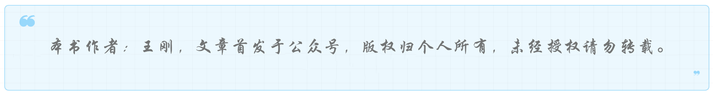
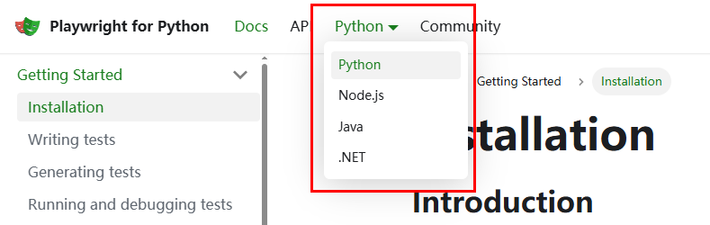
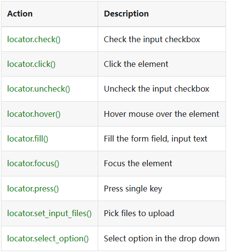
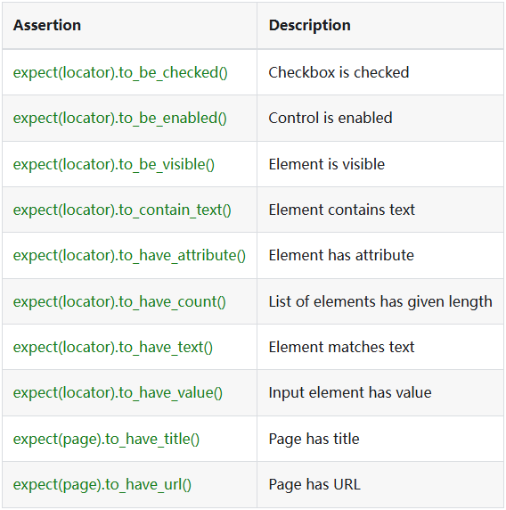
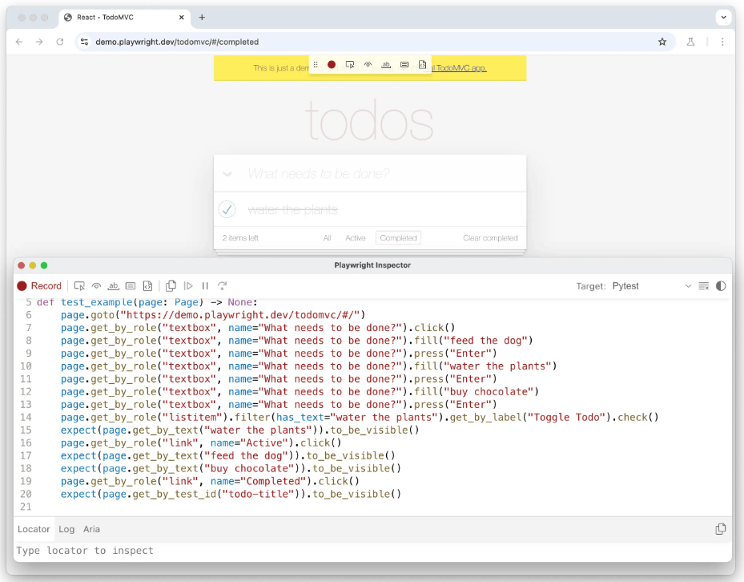
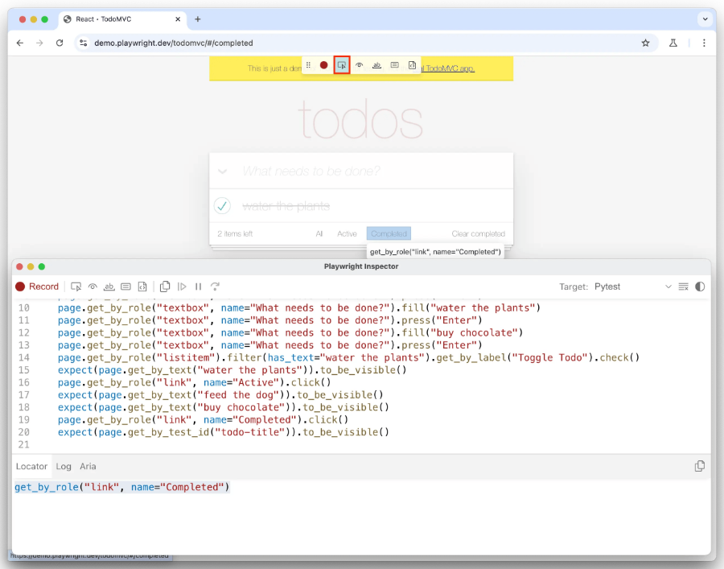
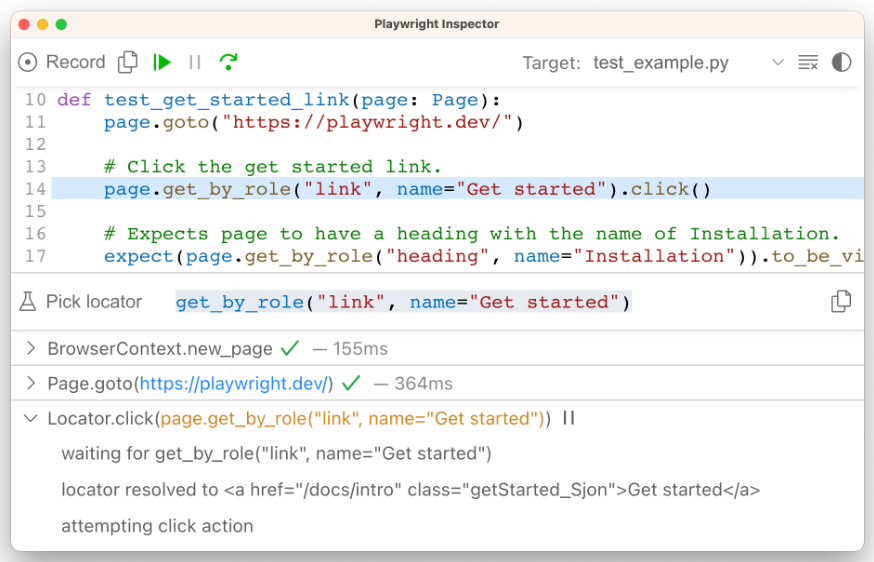
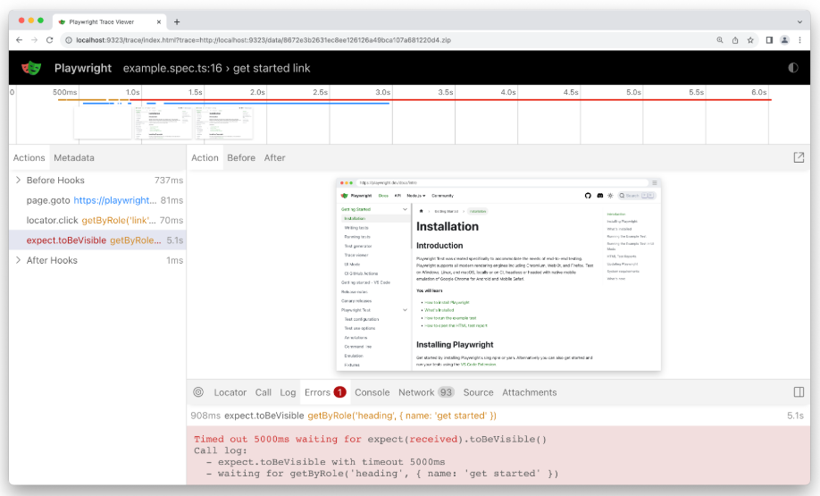

【Playwright】端到端自动化的开源框架¶

什么是Playwright？¶
Playwright是一个开源框架，用于对Web应用进行端到端测试。
什么是端到端测试？¶
这里的“端”，不是指A模块或B模块，而是可以理解为从前端到后端。举个例子，对于登录功能来说，如果只测前端，那么测试范围就是前端页面，可能会对后端接口进行mock。如果只测后端，那么测试范围就是后端接口等。而端到端呢，就是前端输入用户名密码，点击登录，与后端交互，查询数据库，鉴权，后端返回登录成功，前端进行页面跳转。端到端测试，可以理解为全流程测试，也可以理解为模拟用户场景测试。
Playwright框架特点¶
官方网站首页：https://playwright.dev/python/
总结下重点，一是跨浏览器、跨平台、跨语言；二是自动等待；三是多用户场景测试；四是只需要一次登录；五是可以录制脚本。
快速入门¶
在官网的顶部菜单可以切换不同编程语言的教程：

本文及后续文章均选择Python。
安装¶
安装Python的Playwright，这里结合了pytest：
pip install pytest-playwright
成功后安装浏览器：
playwright install
这里也可以不安装浏览器，而是在脚本里面指定现有浏览器路径。
示例¶
test_example.py
import re
from playwright.sync_api import Page, expect
def test_has_title(page: Page):
page.goto("https://playwright.dev/")
# Expect a title "to contain" a substring.
expect(page).to_have_title(re.compile("Playwright"))
def test_get_started_link(page: Page):
page.goto("https://playwright.dev/")
# Click the get started link.
page.get_by_role("link", name="Get started").click()
# Expects page to have a heading with the name of Installation.
expect(page.get_by_role("heading", name="Installation")).to_be_visible()
执行pytest后默认会选择chrome在headless模式下运行，可以通过日志观察运行过程。
更新命令：
pip install pytest-playwright playwright -U
编写测试¶
访问url：
page.goto("https://playwright.dev/")
通过locator定位页面元素进行交互：
## Create a locator.
get_started = page.get_by_role("link", name="Get started")
## Click it.
get_started.click()
也可以写成一行：
page.get_by_role("link", name="Get started").click()
常用的有以下方法：

更多请访问：https://playwright.dev/python/docs/api/class-locator
断言：
import re
from playwright.sync_api import expect
expect(page).to_have_title(re.compile("Playwright"))
常见断言如下：

更多请访问：https://playwright.dev/python/docs/test-assertions
Playwright的test是相互独立的：
from playwright.sync_api import Page
def test_example_test(page: Page):
pass
# "page" belongs to an isolated BrowserContext, created for this specific test.
def test_another_test(page: Page):
pass
# "page" in this second test is completely isolated from the first test.
pytest的fixture也可以直接使用，比如在所有测试开始前和结束前执行某些操作：
import pytest
from playwright.sync_api import Page, expect
@pytest.fixture(scope="function", autouse=True)
def before_each_after_each(page: Page):
print("before the test runs")
# Go to the starting url before each test.
page.goto("https://playwright.dev/")
yield
print("after the test runs")
def test_main_navigation(page: Page):
# Assertions use the expect API.
expect(page).to_have_url("https://playwright.dev/")
生成测试¶
使用codegen：
playwright codegen demo.playwright.dev/todomvc
然后就可以录制脚本了：

更多用法阅读：https://playwright.dev/python/docs/codegen
生成locators：

运行和调试¶
运行命令基本都是基于pytest，然后加了些参数：
pytest
pytest --headed
pytest --browser webkit
pytest --browser webkit --browser firefox
pytest test_login.py
pytest tests/test_todo_page.py tests/test_landing_page.py
pytest -k test_add_a_todo_item
pytest --numprocesses 2
调试通过Playwright Inspector进行：

可以根据IDE比如PyCharm或Visual Studio，查找相应调试方法。
Trace viewer¶
监控Playwright，开启命令：
pytest --tracing on
打开监控：
playwright show-trace trace.zip

如果你打算做前端UI自动化，可以试试Playwright这款开源框架。